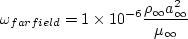
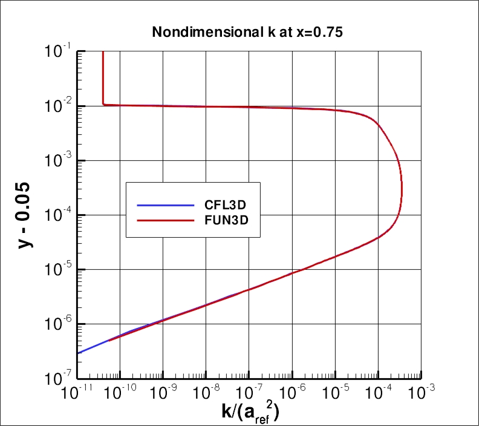
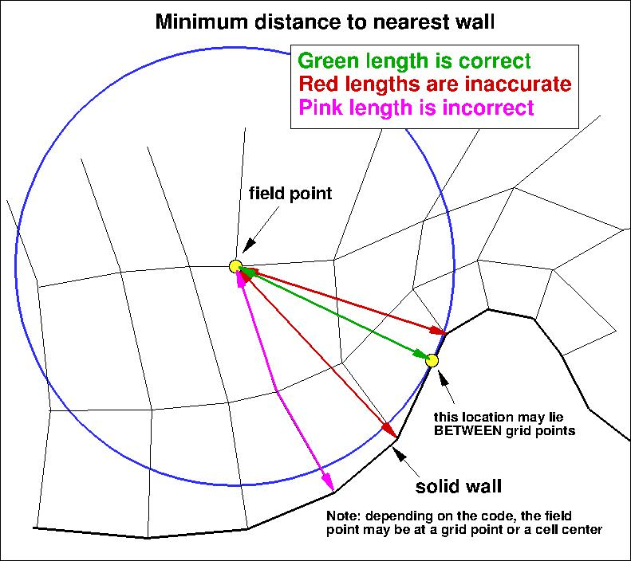

Results are shown here from 2 compressible codes
so that the user may compare their own compressible code results. Multiple grids were
used so the user can see trends with grid refinement. Different codes will behave
differently with grid refinement depending on many factors (including code order of accuracy
and other numerics),
but it would be expected that as the grid is refined the results
will tend toward an "infinite grid" solution that is the same.
Be careful when comparing details: any differences in boundary conditions or flow conditions
may affect results.
Two independent compressible RANS codes,
CFL3D and FUN3D, were used to compute this
bump-in-channel flow with the Menter shear stress transport model
(version SST-Vm - see full description on
Menter Shear Stress Transport page). The full series of 5 grids were used.
CFL3D is a cell-centered structured-grid code, and FUN3D
is a node-centered unstructured-grid code (FUN3D can solve on mixed element grids, so this case
was computed on the same hexahedral grid used by CFL3D). Both codes used Roe's Flux Difference
Splitting and a UMUSCL upwind approach. In CFL3D its standard UMUSCL (kappa=0.33333) scheme was
used, whereas in FUN3D the option UMUSCL 0.5 was used. Both codes were run with
full Navier-Stokes (as opposed to thin-layer, which is CFL3D's default mode of operation),
and both codes used first-order upwinding for the advective terms of the turbulence model.
Details about the codes can be found on their respective websites,
the links for which are given on this site's
home page.
The codes were not run to machine-zero iterative convergence, but an attempt was made to converge
sufficiently so that results of interest were well within normal engineering tolerance and
plotting accuracy. For example, for CFL3D the density residual was typically
driven down below 10-13. It should be kept in mind that many of the files given below
contain computed values directly from the codes,
using a precision greater than the convergence tolerance (i.e., the values
in the files are not necessarily as precise as the number of digits given).
Note that in the SST-Vm model, in the production

the second term is not included. For this particular low-speed flow, the effect of this second term
is negligible, so SST-V and SST-Vm results are essentially the same.
(Previously on this page the results were reported as SST-V solutions, but more properly they should be referred
to as SST-Vm.)
For the CFL3D and FUN3D tests reported below, the turbulent inflow boundary conditions used for SST-Vm
were the following:

- 
The above two equations represent the "standard" SST-Vm boundary condition
values used by both CFL3D and FUN3D, chosen to achieve
a not-too-low level of freestream
turbulent kinetic energy, a not-too-severe rate of freestream turbulence decay,
and a reasonable level of freestream turbulent eddy viscosity of
 .
.
For the interested reader, typical input files for this problem are given here:
CFL3D V6.5:
FUN3D (original):
FUN3D (new - should yield nearly the same converged results as original):
All FUN3D results below are from the original run (rev 32577).
Note: prior to April 2, 2010, the lift and drag coefficient numbers posted on this page were scaled too high by a
factor of 1.5, because an incorrect reference area (of 1 instead of 1.5) was used. This has been corrected here.
The following plots show the convergence of the wall skin friction coefficient
at the bump peak (at x=0.75), in front of the bump peak (at x=0.6321975), and
aft of the peak (at x=0.8678025) with
grid size for the two codes.
In the plot the x-axis is plotting 1/N1/2, which is proportional to
grid spacing (h).
At the left of the plot, h=0 represents an infinitely fine grid.
As can be seen, both codes go toward approximately the same result on an infinitely refined grid.
Note that these results are somewhat different than for SST or SST-2003.
Using the uncertainty estimation procedure from the Fluids Engineering Division of the ASME (Celik, I. B.,
Ghia, U., Roache, P. J., Freitas, C. J., Coleman, H., Raad, P. E.,
"Procedure for Estimation and Reporting of Uncertainty Due
to Discretization in CFD Applications," Journal of Fluids Engineering, Vol. 130, July 2008, 078001, https://doi.org/10.1115/1.2960953), described in Summary of Uncertainty Procedure,
the finest 3 grids yield the following for skin friction coefficient at x=0.75, x=0.6321975, and
x=0.8678025:
| Code |
Computed apparent order, p |
Approx rel fine-grid error, ea21 |
Extrap rel fine-grid error, eext21 |
Fine-grid convergence index, GCIfine21 |
| x=0.75 |
| CFL3D |
1.18 |
0.438% |
0.345% |
0.433% |
| FUN3D |
1.13 |
0.497% |
0.414% |
0.519% |
| x=0.6321975 |
| CFL3D |
0.96 |
0.311% |
0.330% |
0.414% |
| FUN3D |
0.81 |
0.277% |
0.369% |
0.463% |
| x=0.8678025 |
| CFL3D |
0.91 |
0.114% |
0.130% |
0.162% |
| FUN3D |
4.72 |
0.016% |
0.001% |
0.544% |
The data file that generated the above plot is given here:
cf_convergence_sstv.dat.
The following plots show: (1) total drag coefficient, (2) pressure drag coefficient, (3) viscous
drag coefficient, and (4) total lift coefficient for the bump. In this bump case the surface
skin friction is singular (tends toward infinity) at the leading edge. The finer the grid, the
more nearly singular the local behavior on a finite grid. There is also locally anomalous
behavior in Cf at the back end of the bump wall (at x=1.5), as is often seen in CFD solutions
near trailing edges (see, e.g., Swanson and Turkel, AIAA Paper 87-1107, 1987,
https://doi.org/10.2514/6.1987-1107). Both of these
behaviors may have some influence on the convergence/order-property of the integrated viscous
component of the drag coefficient. As seen in the following plots, both codes are tending
toward similar integrated force coefficient values as the grid is refined.
Using the uncertainty estimation procedure from the Fluids Engineering Division of the ASME (Celik, I. B.,
Ghia, U., Roache, P. J., Freitas, C. J., Coleman, H., Raad, P. E.,
"Procedure for Estimation and Reporting of Uncertainty Due
to Discretization in CFD Applications," Journal of Fluids Engineering, Vol. 130, July 2008, 078001, https://doi.org/10.1115/1.2960953), described in Summary of Uncertainty Procedure,
the finest 3 grids yield the following for force coefficients:
| Code |
Quantity |
Computed apparent order, p |
Approx rel fine-grid error, ea21 |
Extrap rel fine-grid error, eext21 |
Fine-grid convergence index, GCIfine21 |
| CFL3D |
Cd |
oscillatory convergence |
0.084% |
N/A |
N/A |
| CFL3D |
Cd,p |
oscillatory convergence |
0.031% |
N/A |
N/A |
| CFL3D |
Cd,v |
1.83 |
0.091% |
0.036% |
0.044% |
| CFL3D |
CL |
1.07 |
0.264% |
0.239% |
0.299% |
| FUN3D |
Cd |
1.81 |
0.130% |
0.052% |
0.065% |
| FUN3D |
Cd,p |
4.13 |
0.175% |
0.011% |
0.013% |
| FUN3D |
Cd,v |
2.41 |
0.168% |
0.039% |
0.049% |
| FUN3D |
CL |
0.84 |
0.060% |
0.077% |
0.096% |
The data file that generated the above plot is given here:
force_convergence_sstv.dat.
The surface skin friction coefficient from both codes on the finest 1409 x 641 grid
over the entire bump is shown in the next plot. Again, local anomalous behavior exists near the leading
edge (x=0) due to singular behavior of the solution,
and near the trailing edge (x=1.5) due to numerical influences.
These behaviors differ for the two codes, and result in small local deviations that
can be seen when zoomed into the two locations. In addition, both codes indicate turbulence
"activation" at slightly different locations very near the leading edge, 0 < x < 0.02
("activation" is where the turbulence model transitions
on its own from laminar to turbulent). But both codes are seen to yield nearly identical results
over most of the bump wall.
The data file that generated the above plot is given here:
cf_bump_sstv.dat.
The surface pressure coefficient from both codes on the finest 1409 x 641 grid
over the entire bump wall is shown in the next plot.
Both codes yield nearly identical results.
The data file that generated the above plot is given here:
cp_bump_sstv.dat.
The nondimensionalized eddy viscosity contours, k contours, and omega contours
from the two codes on the finest 1409 x 641 grid are shown
in the following plots (y-scale expanded for clarity).
Results from the two codes on this grid are essentially indistinguishable.
(Note legends do not necessarily reflect min and max values.)
The data files that generated the above plots are given here:
mut_contours_cfl3d_sstv.dat.gz (9.7 MB),
k_contours_cfl3d_sstv.dat.gz (9.9 MB),
omega_contours_cfl3d_sstv.dat.gz (9.9 MB) (structured,
at cell centers) and
mut_contours_fun3d_sstv.dat.gz (17.2 MB),
k_contours_fun3d_sstv.dat.gz (17.4 MB),
omega_contours_fun3d_sstv.dat.gz (17.5 MB) (unstructured,
at grid points). Note that these are all gzipped
Tecplot
formatted files, so you must either have Tecplot or know how to read their format in order to use these
files.
Using the finest 1409 x 641 grid, an extracted nondimensional eddy viscosity profile at
x=0.75 is shown below, along with a plot of the maximum nondimensional
eddy viscosity as a function of x.
Notice that the nondimensional eddy viscosity profile has a small "bump" about halfway between
its peak and the boundary layer edge (near y = .057).
The same behavior occurs for both CFL3D and FUN3D on the finest grid.
This behavior is due to the SST blending between omega and vorticity
in the denominator of the equation for eddy viscosity, and is only
noticeable on extremely fine grids.
The data file that generated the eddy viscosity profile at x=0.75 is given here:
mut_0.75_sstv.dat.
The data file that generated the max eddy viscosity plot is given here:
find_peak_mut_sstv.dat (extracted only for CFL3D).
The nondimensional k and omega profiles at x=0.75 from the 1409 x 641 grid are shown in the following plots.
Note that the sharp behavior of these variables near the boundary layer edge
is one of the characteristics of this model (as well as others - see, e.g., Hellsten, A., "New Two-Equation
Turbulence Model for Aerodynamic Applications," PhD Thesis, Helsinki University of Technology,
Espoo, Finland, Feb 2004, pp. 96-103, available from
link to TKK dissertations). In cases where the grid resolution is not
as fine as it is here, numerical damping generally acts to smooth the sharp
behavior.


The data file that generated the eddy viscosity profile at x=0.75 is given here:
sstv_omega_k.dat.
U-Velocity profiles are shown at the two x-locations of x=0.75 and x=1.20148 for the finest grid
in the following plot.
The data file that generated the above plot is given in
bump_u_sstv.dat (extracted only for CFL3D).
The SST-Vm model relies on the minimum distance to the nearest wall. For this case,
contours of this function
are shown in the following plot, for the grid 1 level down from the finest
grid.

The data file that generated the above plot is given in
bump_1levdown.mindist.dat.gz (gzipped file,
3.9 MB, unstructured, at grid points). Note
that this is a gzipped Tecplot
formatted file, so you must either have Tecplot or know how to read their format in
order to use it.
It is important to note that computing minimum distance by searching along grid lines is
incorrect, and is not the same as computing actual minimum distance to the nearest wall for this grid. Using
the former method will yield some minor differences in the results. The following sketches
demonstrate the concept of minimum distance. Improperly-calculated minimum distance
functions will particularly produce incorrect results for cases in which the
grid lines are not perfectly normal to the body surface.
Note that when the nearest wall point is a sharp convex corner or edge (like an airfoil or wing trailing edge) then the
correct minimum distance is the distance to that corner or edge, which is not a wall normal.


SST-Vm results from OVERFLOW are shown alongside the CFL3D and FUN3D results below.
NAS Technical Paper 2014-03 (pdf file)
(16.2 MB) by Childs, Pulliam, and Jespersen provides details of the OVERFLOW results for this case.
Return to: 2D Bump-in-channel Verification Case Intro Page
Return to: Turbulence Modeling Resource Home Page
Recent significant updates:
08/28/2020 - changed SST-V naming to SST-Vm
12/05/2014 - added link to NAS Technical paper of OVERFLOW results for the verification cases
Privacy Act Statement
Accessibility Statement
Responsible NASA Official:
Ethan Vogel
Page Curator:
Clark Pederson
Last Updated: 03/01/2023